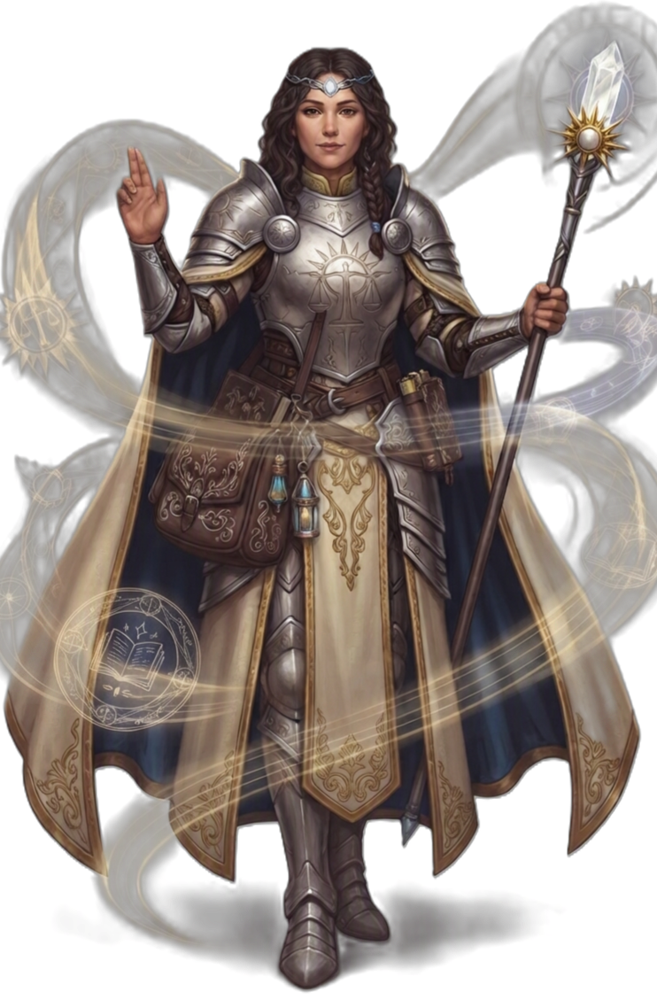

| Rolle | Vollzauberer · Heiler · Unterstützer · Untote-Vernichter · Front-Hybrid |
| Zauberertyp | Vollzauberer Zauberslots bis Rang 9 |
| Primärer Schadensattribut | Weisheit (WIS) |
| Sekundärer Schadensattribut | — |
| Zauberattribut | Weisheit (WIS) |
| TP (L1) | 8 |
| TP pro Level | 5 |
| Rüstung | Mittlere Rüstung (inkl. Schilde) |
| Waffen | Göttliche Waffen — Kriegshammer, Morgenstern, Streitkolben, Schleuder |
| Rettungswürfe | Weisheit (WIS), Charisma (CHA) |
| Attributsteigerung (Level) | 4, 8, 12, 16 |
| Fertigkeiten (2 zur Auswahl) | Religion, Medizin, Intuition, Geisteskunde, Wahrnehmung |
Der KLERIKER ist der göttliche Diener — er kanalisiert die Macht seines Gottes in Heilung, Schutz und Zerstörung von Untoten. Weisheit treibt seine Zauber, und er ist der robusteste Zauberer auf dem Feld: mittlere Rüstung, Schild, 8 TP auf Level 1. Seine Göttliche Energie (L2) ist ein geteilter Pool für Untote Vertreiben und subclass-spezifische Optionen — 2 pro Rast, 3 ab L18. Göttlicher Schlag (L8) fügt seinen Waffenangriffen +1W8 Heilig-Schaden hinzu (+2W8 ab L14). Heiliges Gebet und Leben Erwecken heilen Verbündete, Göttliche Wacht bufft die RK der Gruppe, Göttlicher Sturm (L9) richtet 8W8 Heilig + 8W8 Donner in einer Fläche an. Mit Göttliches Eingreifen (L10) bittet er seinen Gott um Hilfe — Kleriker-Level Prozent Chance, automatisch erfolgreich ab L20. Er ist der wichtigste Heiler und Unterstützer in jeder Gruppe, aber kein reiner Hinterland-Zauberer — er steht in der zweiten Reihe und hält die Gruppe am Leben.
| Level | Fähigkeit | Beschreibung |
|---|---|---|
| L1 | Göttliches Zaubern | Vollzauberer-Progression (Zauberslots Rang 1–9). Zauberattribut: WIS. |
| L1 | Gewählter Rettungswurf | Passiv: +Profan-Bonus auf einen gewählten Rettungswurf (skaliert: +2/+4/+6/+8/+10 bei L1/L5/L9/L13/L17). |
| L2 | Göttliche Energie | Geteilter Pool: 2/Rast (3/Rast ab L18). Gewährt Untote Vertreiben und subclass-Optionen. |
| L2 | Untote Vertreiben | Göttliche Energie: Untote in 30ft müssen WIS-Rettungswurf ablegen oder werden vertrieben/vernichtet. |
| L3 | Göttliche Gabe | Wähle 2 zusätzliche Zauber aus der Kleriker-Liste (bis Rang 2). |
| L5 | Untote Vernichten | Untote bis CR 0.5 werden bei erfolgreichem Vertreiben sofort vernichtet. |
| L6 | Gesegnete Heilung | Passiv: +WIS-Modifikator auf alle Heilzauber. |
| L8 | Göttlicher Schlag | Passiv: +1W8 Heilig-Schaden auf Waffenangriffe (+2W8 ab L14). Untote Vernichten bis CR 1. |
| L10 | Göttliches Eingreifen | 1/Lange Rast: Kleriker-Level Prozent Chance, Gott um Hilfe bitten. |
| L11 | Untote Vernichten+ | Untote Vernichten bis CR 1 (erweitert). |
| L17 | Freie Zauber | 1/Rast: Ein Zauber bis Rang 5 ohne Zauberslot. |
| L18 | Verbesserte Göttlichkeit | Göttliche Energie: 3/Rast statt 2/Rast. |
| L19 | Untote Vernichten++ | Untote Vernichten bis CR 2. |
| L20 | Göttliches Eingreifen+ | Passiv: Göttliches Eingreifen ist automatisch erfolgreich. |
Alle Zauber nutzen Zauberslots (Vollzauberer-Progression, Rang 1–9). Zauberattribut ist Weisheit (WIS). Upcast-Skalierung pro zusätzlichem Zauberslot bei Göttliche Strafe (+1W6), Blitzschlag (+1W8), Leben Erwecken (+1W8 Heilung), Flammenschlag (+1W6), Heiliges Gebet (+1W4 Heilung).
| Fähigkeit | Aktion | Nutzung | Level | Beschreibung |
|---|---|---|---|---|
| Lichtstrahl | Aktion | Basiszauber — unbegrenzt | L1 | LICHT 1W8 Heilig, Angriffswurf. |
| Fähigkeit | Aktion | Nutzung | Level | Beschreibung |
|---|---|---|---|---|
| Göttliche Strafe | Aktion | Zauberslot 1 | L1 | LICHT 3W6 Heilig + KON-Rettungswurf (halber Schaden bei Erfolg), Reichweite 18. Upcast: +1W6 pro Slot. |
| Heiliges Gebet | Aktion | Zauberslot 1 | L1 | LICHT Flächeneffekt 10ft um dich: Heile alle Verbündeten 2W4+2. Upcast: +1W4 Heilung pro Slot. |
| Blitzschlag | Aktion | Zauberslot 2 | L3 | STURM 4W8 Blitz + GES-Rettungswurf (halber Schaden bei Erfolg). Upcast: +1W8 pro Slot. |
| Leben Erwecken | Aktion | Zauberslot 2 | L3 | LICHT Berührung: Heile 3W8+3. Upcast: +1W8 Heilung pro Slot. |
| Flammenschlag | Aktion | Zauberslot 3 | L5 | FLAMME 6W6 Feuer + GES-Rettungswurf (halber Schaden bei Erfolg). Upcast: +1W6 pro Slot. |
| Göttliche Wacht | Aktion | Zauberslot 4 | L7 | LICHT Aura 10ft: Verbündete erhalten +2 RK für 1 Minute. |
| Göttlicher Sturm | Aktion | Zauberslot 5 | L9 | LICHT Flächeneffekt 20ft: 8W8 Heilig + 8W8 Donner + KON-Rettungswurf (halber Schaden bei Erfolg). |
| Fähigkeit | Aktion | Nutzung | Level | Beschreibung |
|---|---|---|---|---|
| Untote Verbannen | Aktion | Göttliche Energie | L2 | LICHT Untote in 30ft müssen WIS-Rettungswurf ablegen oder 10W8 Heilig. CR-Limit skaliert mit Level. |
| Auferstehung | Aktion | 1/Lange Rast | L13 | LICHT Belebe verbündeten Kämpfer mit vollen TP. |
| Ressource | Mechanik | Verfügbarkeit |
|---|---|---|
| Zauberslots | Vollzauberer-Progression (Rang 1–9). Zauberattribut: WIS. | Alle Zauber, pro Zauberslot |
| Göttliche Energie | Geteilter Pool für Untote Vertreiben und subclass-Optionen | 2/Rast (3/Rast ab L18) |
| Göttliches Eingreifen | Kleriker-Level Prozent Chance auf göttliche Hilfe | 1/Lange Rast, ab L10 (automatisch ab L20) |
| Freie Zauber | Zauber bis Rang 5 ohne Zauberslot | 1/Rast, ab L17 |
| Auferstehung | Belebe Verbündeten mit vollen TP | 1/Lange Rast, ab L13 |